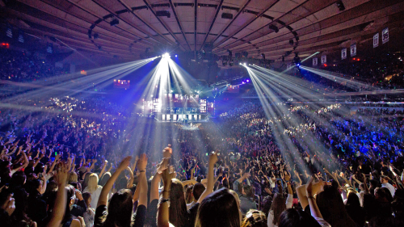

Over winter break, I was bombarded with questions about my first semester at college. Naturally, I responded with smiles and nods, hoping to skip the typical holiday small talk. Unfortunately, the question I couldn’t so easily avoid was “What’s your major?” I tried my best to make “Undecided” sound fresh and exciting, but to no avail. Just as my relative-turned-interrogator started to give up, I dazzled him or her with my non-academic major, celebrity stalking, and my favorite book from the semester, Lauren Graham’s Talking as Fast as I Can. Read More
The start of a new semester can bring with it schedule catastrophes, exam anxiety, and overwhelming extracurricular responsibilities. If you’re anything like me, you need an escape from campus every once in awhile, and preferably one that will help you unwind and detox from the stress of school. New York City’s buzzing music scene is here to the save the day with artists from a range of genres, all performing at some of the city’s most popular venues. Read More